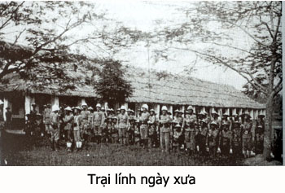

Chúng ta đang ở vào đầu thế kỷ 21, khi các bạn trẻ nghe tôi nhắc lại những tập tục lạ đời của các thập niên 1940, 1950 trong những địa phương mà đoàn hát cải lương của chúng tôi đặt chân đến hát, chắc chắn là các bạn trẻ sẽ ngạc nhiên, thậm chí có người không thể tin là chuyện đó có thể xảy ra. Nhưng những ông bạn nào từ 60 tuổi trở lên, có trải qua cơn binh lửa ở quê hương thì chắc chắn là sẽ nhớ đến một xã hội nhiễu nhương, đầy biến động trong thời kỳ có chiến tranh Pháp – Việt.
Hồi đó, cuối năm 1947, đoàn cải lương Tiếng Chuông của ông Bầu Cang được một người mua dàn hát, đưa đoàn đi lưu diễn ở các tỉnh miền Đông, trạm đầu tiên đoàn Tiếng Chuông hát ở quận Gò Dầu Hạ, sau đó chuyển qua hát ở tỉnh lỵ Tây Ninh. Ông Bầu mướn một chiếc xe đò để chở đào kép, một xe camion chở cảnh trí, dàn máy âm thanh, dàn đèn và các nhơn viên dàn cảnh.
Xe của đoàn hát rời khỏi rạp hát Thành Xương ở trung tâm thành phố Sàigòn, khi xe qua khỏi ngã ba Bà Quẹo, chúng tôi đã cảm thấy bầu không khí chiến tranh ngột ngạt đến khó thở. Đoàn xe phải di chuyển chậm chạp vì nhiều đoạn đường bị VM đào phá, có những đoạn đường thường bị du kích phục kích bắn sẻ nên nhiều xe đò và xe hàng phải dừng lại, chờ cho quân đội Pháp và 1ính Bạt-Ti-Dăng dùng xe nồi đồng (xe bọc thép) đi mở đường. Khi nào nhà binh Pháp thấy bảo đảm được sự an toàn mới cho các xe của dân sự chạy. Xe của đoàn hát Tiếng Chuông cũng phải theo đoàn Convoi đó mà di chuyển. Mỗi khi xe đến một trạm kiểm soát, tất cả những hành khách phải xuống xe, đi từng người một vào bót gác, trình giấy Thẻ Xanh (laisser-passer) của nhà cầm quyền Pháp cấp. Ai không có Thẻ Xanh thì bị bắt nhốt lại trong bót vì bị tình nghi là Việt Minh.

.
Từ quận Gò Dầu Hạ đến các quận huyện thuộc tỉnh Tây Ninh thì quân đội Pháp đóng đồn lớn trong Quận, trong Tỉnh, họ giao việc hành quân tuần tiểu và kiểm soát cho quân đội Cao Đài phụ trách, cho nên đoàn cải lương Tiếng Chuông gặp rắc rối vì không biết những tập tục riêng của địa phương.
Từ Gò Dầu Hạ đi đến tỉnh Tây Ninh, xe của đoàn hát phải ghé qua trạm kiểm soát của quân đội Cao Đài tại xã Cẩm Giang. Vì có nhiều xe đò và xe hàng tới trước nên đoàn hát chúng tôi phải xếp hàng chờ tới phiên của mình. Tôi và các nghệ sĩ Tám Cao, Tuấn Sĩ, Trường Xuân xuống xe, lại xe bán nước mía bên vệ đường để uống nước mía giải khát. Tôi quan sát thấy hành khách vào bót kiểm soát, trình giấy tờ xong ra xe coi bộ cũng dễ dàng, chớ không có chi rắc rối. Đồng bào trong xã Cẩm Giang, nhiều người mặc áo dài trắng, quần trắng, đàn ông có để búi tóc như đàn bà, khác hẳn lối trang phục của người dân Sàigòn. Nét mặt của họ có vẻ thuần hậu, chất phác. Theo lời của chị bán nước mía thì Bộ Tư Lịnh quân đội Cao Đài đóng ở xã Cẩm Giang nên đạo hữu Cao Đài tập trung về đây sinh sống rất là đông đảo. Việc mua bán làm ăn dễ dàng, dân chúng sung túc. Nếu đoàn hát đến xã Cẩm Giang hát thì chắc chắn là sẽ rất đông khách. Chúng tôi nói chuyến đi lưu diễn nầy là do người mua dàn hát, họ đưa đoàn hát tới vùng nào thì đoàn hát phải tới đó hát, khi nào hết hợp đồng bán dàn hát, bận trở về, chúng tôi sẽ xin phép hát ở Cẩm Giang.
Đến lượt xe của đoàn hát phải vào trình giấy tờ, anh sớp phơ vô trình giấy, xong rồi anh ra ngồi bên tay lái xe. Kế đó anh lơ xe, vô… anh cũng bình yên ra khỏi bót. Tới phiên ông Bầu Cang… ông vô bót trình giấy tờ nhưng sao lâu quá không thấy ông trở ra. Chúng tôi phát lo trong bụng. Nghệ sĩ Tám Cao được gọi vô trình Thẻ Xanh, anh Tám Cao cũng kẹt trong bót như ông Bầu Cang. Tiếp đó là Trường Xuân, rồi tới Tuấn Sĩ, rồi tới phiên tôi…
– “Laisser-passer” của anh đâu? – Ông Trung úy, xếp đồn hỏi tôi.
– Bẩm quan lớn, đây là laisser-passer của tôi.
Tôi trình Thẻ Xanh của tôi do Tỉnh Trưởng Gia Định cấp cho tôi. Ôngười Xếp bót trợn mắt ngó tôi, tôi chột dạ nhìn quanh, tôi thấy ông Bầu Cang, các anh Tám Cao, Tuấn Sĩ, Trường Xuân bị bắt ngồi bệt xuống đất, mặt mày xanh lè, cắt không còn một hột máu! Tôi cũng phát run…
– Anh tên gì? – Ông xếp bót gằn giọng, hỏi tôi.
– Bẩm quan lớn..
– Im! Khỏi nói nữa. Lại kia ngồi với mấy thằng mới bị bắt đó…
– Bẩm Quan lớn, chúng tôi ở đoàn hát, có giấy tờ hợp lệ,, không hiểu chúng tôi phạm tội gì, xin Quan lớn dạy cho chúng tôi biết…
– Anh kêu tôi một tiếng Quan Lớn nữa là tôi đập ông năm roi đó. Các anh nói là người đi đoàn hát, đi nhiều nơi nhiều chỗ rồi sao các anh không biết tập tục của địa phương? Anh làm nghề chi trong gánh hát?
– Dạ, bẩm…ơ..o… soạn giả.
– Còn mấy thằng mới bị bắt đó?
– Dạ bẩm… ông Bầu với mấy anh kép hát…
– Có thằng nào biết đờn không?
– Dạ, có nhạc sĩ ở ngoải chưa vô trình giấy tờ.
– Mầy ra kêu thằng đờn vô, biểu nó em theo cây đờn. Mau, chậm là tao nẹt cho mấy roi đó.”
– Dạ!
Tôi bất mãn trong bụng nhưng trong thời chiến tranh, vùng nào cũng có những người chúa tể của vùng đó, chọc giận họ “feu” mình cái rầm là theo ông bà ngậm hờn dưới chính suối. Tôi tự bảo “Nhứt câu nhịn, chín câu lành”.
Tôi ra xe, kêu anh Năm Khạp, nhạc sĩ đờn kìm của đoàn vô. Anh Năm Khạp khi di chuyển trên xe thì bao giờ anh cũng cầm theo cây đờn kìm, vật báu mà anh quý không thua gì tánh mạng của anh.
– Mầy là nhạc sĩ hả? Giấy tờ đâu?
– Bẩm quan lớn.
– Im, lại ngồi với mấy thằng kia. Cái thằng soạn giả cũng vậy! Đem nhốt vô khám hết!
Thấy chúng tôi ngơ ngác không hiểu là mình bị phạm tội gì, ông xếp bót nói thêm:
– Các anh nên nhớ, trong vùng kiểm soát của quân đội Cao Đài, khi nói chuyện với các cấp chỉ huy thì các anh phải nói là thưa Ngài, bẩm Ngài. Cái tiếng quan lớn là của Hòa Hảo họ dùng, chúng tôi không dùng.
Lính ra bảo đoàn hát ngồi chờ rồi cho các xe phía sau vô trình giấy tờ. Các xe xếp hàng sau xe của chúng tôi đều được qua trót lọt vì họ thường qua lại vùng nầy, nên họ biết phải bẩm ngài, thưa ngài. Còn gánh hát chúng tôi xưa nay hát ở các tỉnh Tiền Giang, Hậu Giang, quen cái tiếng Bẩm Quan lớn nên mới phải chịu khổ ở cái xã Cẩm Giang nầy.
Ông xếp bót xuống khám giam, đưa cho chúng tôi quyển sách Đại Đạo Tam Kỳ Phổ Độ, ông nói:
– Mấy anh đọc cuốn kinh sách nầy rồi viết bài hát ca ngợi Pháp Chánh Truyền là căn bản Giáo Lý của Cao Đài Giáo là tôi sẽ thả các anh ra.
Chúng tôi tức giận vì bị người ta lạm quyền vô cớ bắt giam nhưng cũng biết rằng chúng tôi không thể đi thưa gởi hay khiếu nại với ai để xét xử cái hành động bất công nầy. Muốn ra khỏi khám giam thì chỉ có một việc duy nhứt phải làm là viết một bài ca ca ngợi Giáo Lý Đạo và nhờ kép Tám Cao ca lên cho vui lòng Xếp.
Nói thì dễ, nhưng viết một bài ca ca ngợi Giáo Lý của một Đạo giáo đâu có phải là một chuyện dễ làm. Tôi là soạn giả của đoàn hát nên ông Bầu Cang trao cho tôi trách nhiệm rắc rối nầy. Tôi đọc đi đọc lại quyển kinh, chỉ nhớ có mấy chữ đầu của câu kinh thứ nhứt của bài Niệm Hương: Đạo Gốc Bởi Lòng Thành Tín Hiệp…
Kép độc Trường Xuân cằn nhằn:
– Ông Bầu bán dàn hát làm chi cho người ta đưa mình vô cái chỗ chết. Kinh kệ như vầy, có đọc chừng cả tháng cũng chưa chắc gì biết cái Giáo Lý của Đạo ra làm sao, làm cách nào mà trong khoảnh khắc lại có thể viết thành bài ca cho được?
Bầu Cang:
– Mầy đừng có cằn nhằn, làm rối trí anh Nguyễn Phương. Để anh kiếm cách gỡ rối cho mình.
Tôi nói:
– Hồi nãy ông Xếp hăm đánh tôi năm roi. Bây giờ tôi viết tầm bậy thì ông ta sẽ quất tôi mười roi đó.
Tuấn Sĩ nói:
– Thôi, tụi mình năm người bị bắt nhốt ở đây, mình ra xin Ngài đánh mỗi người hai roi, khi ra khỏi khám thì mình quay xe về Sàigòn, xuống miệt Hậu Giang hát cho êm chuyện. Đi hát ở các vùng nầy, có cho ăn vàng, tôi cũng không ham.
Tám Cao xúi tôi dựa theo bài Niệm Hương, viết thành hai câu vọng cổ. Tôi nghĩ là nếu viết như vậy mà anh Tám Cao ca không đàng hoàng, ông Xếp tưởng mình có ý nhạo báng thì kẻ phải “ăn đạn đồng” chinh là thằng soạn giả viết bài đó, chớ có ai vô đây mà chịu chết thay cho tôi?
Cái ý nghĩ bị giết chết bỗng làm lóe lên trong óc tôi câu giảng kinh trong sách là năm Mậu Thìn (1928) Thầy (Đức Ngọc Hoàng Thượng Đế) có lên Cơ giảng về Bất Sát Sanh và Vô Vi Tâm Pháp. Do đó tôi dùng mấy câu kệ nầy để viết bài ca để nhắc khéo ông Xếp là Thầy đã dạy là không được giết người (bất sát sanh). Hy vọng là ông Xếp là bậc chân Trung Ương, ông ta phải nghe lời dạy của Cao Đài Tiên Ông mà tha cho chúng tôi.
Tôi mở đầu bốn câu kinh Niệm Hương, chỉ thêm một chữ Lòng vô chữ Hò, để cho dễ vô vọng cổ và trong lòng câu vọng cổ thì tôi dùng ý của các bài giảng về Bất Sát Sanh và Vô Vi Tâm Pháp để mà viết. Bài vọng cổ đó như sau
Nói lối vô vọng cổ:
Đạo Gốc Bởi Lòng Thành Tín Hiệp,
Lòng nương nhang khói tiếp truyền ra
Mùi hương lư ngọc bay xa,
Kính thành cầu nguyện Tiên Gia...
vô Vọng cổ:
… Chứng cho lòng.. Cao Đài xuất thế cứu trần gian, Mạt pháp chúng sanh chịu khổ nàn… Cái sống của chúng sanh, chẳng khác nào một nhành hoa trong cội, đủ tháng đủ ngày thì mới trổ bông sanh trái. Mỗi mạng sống đều hữu căn hữu kiếp, nếu ai giết mạng sống đều chịu quả báo không sai vì làm trái với lòng hiếu sanh của Thầy đã phân cho khắp Càn Khôn Thế Giới.
Câu 2
…..Vạn năng còn ngủ say chưa tỉnh khiến cho bước đời vô định phiêu lưu nên mới vương khổ lụy tâm thần… Lục căn giao động triền miên, Lục trần lôi cuốn hồn thiêng mê lầm. … Nào ai biết giả tâm sanh mộng, nào ai biết biển động sóng gào, Biển đời sóng gió lao xao, Biển tâm thanh tịnh muôn màu hiệp chơn.
Sứ mạng Cao Đài buổi trước tiên
Vô Vi Tâm Pháp độ người hiền
Tam Kỳ Mạt Hạ Khai Chân Lý,
Dẫn dắt người phàm có thiện duyên.
Nghệ sĩ Tám Cao học thuộc lòng hai câu vọng cổ của tôi vừa viết, anh ngân nga ca, nhạc sĩ Năm Khạp dạo đờn hòa theo, rồi Tám Cao ca lớn lên. Khám đường giam giữ chúng tôi bỗng trở thành một nơi hòa ca cổ nhạc, tiếng ca ngọt lịm của nghệ sĩ Tám Cao hòa theo tiếng đờn trầm ấm của nhạc sĩ Năm Khạp thu hút sự chú ý của ông Xếp bót.
Ông đến nghe và bảo Tám Cao ca lại hai lần. Các binh sĩ Cao Đài trong đồn cũng đến nghe. Mọi người khen hay duy chỉ có ông Xếp bót là trầm ngâm suy nghĩ. Ông thả chúng tôi ra và nói:
– Các anh đi hát thì phải biết các tập tục của địa phương. Bây giờ là thời buổi có chiến tranh, các anh ăn nói không giống người địa phương, tất nhiên là chúng tôi phải nghi ky, phải đề phòng, các anh đừng phiền.
– Dạ, bẩm Ngài dạy rất phải, chúng tôi rất cám ơn sự rộng lượng của Ngài.
Ông Bầu Cang nói nịnh một câu rồi kéo chúng tôi mau mau ra khỏi đồn lính. Xe của đoàn hát vẫn còn đó, các anh chị em nghệ sĩ ngồi bên vệ đường rầu rĩ đợi chờ. Không một ai bỏ trở về Saigon hay đi vô tỉnh Tây Ninh khi chưa biết rõ số phận của những bạn đồng nghiệp bị bắt. Khi thấy chúng tôi được thả ra, tất cả các bạn vỗ tay reo mừng, họ chạy đến ôm chúng tôi, tíu tít hỏi han sức khỏe, sợ chúng tôi bị lính trong đồn đánh đập.
Thật là cảm động, một kỷ niệm khó quên của đời người nghệ sĩ lang thang.